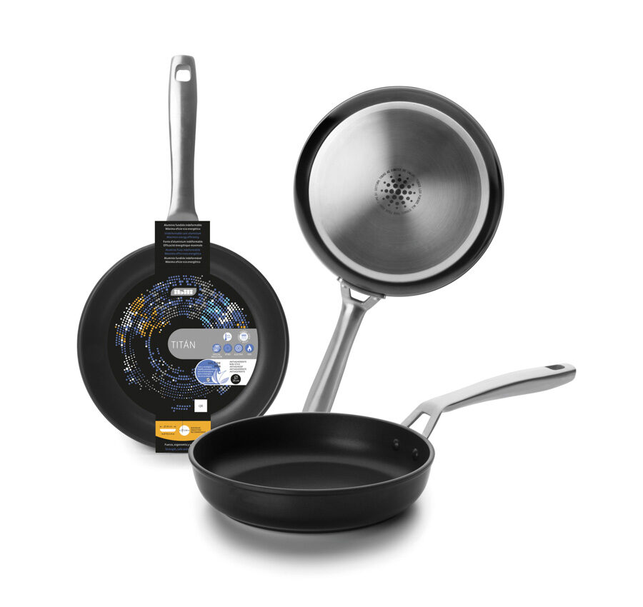
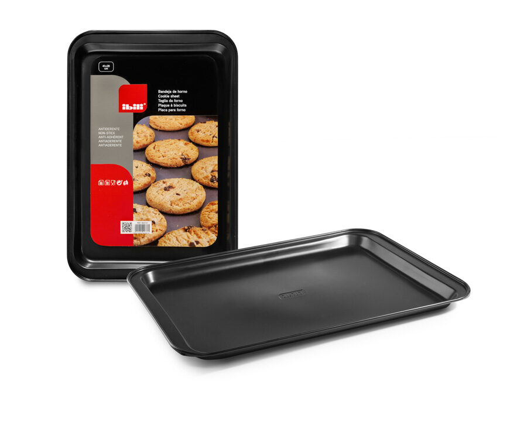
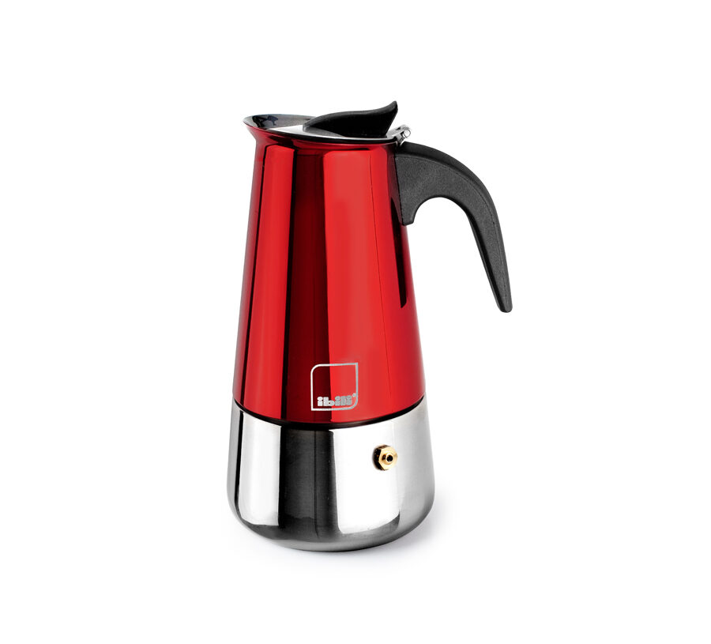

Ecommerce · 2026
Ibili Catálogo
Catálogo responsive y ficha detallada para explorar los productos de la tienda Ibili.

Contexto
Ordenar los productos
Esta parte del ejercicio E06 se centró en mostrar una colección amplia y en explicar un producto concreto.
El catálogo debía ser fácil de recorrer y mantener la misma identidad visual que la página principal.
Proceso
Tarjetas reutilizables
Los productos se construyeron con una estructura de tarjeta repetida. En la ficha, la imagen, el precio, las características y el botón principal se agruparon por orden de importancia.


Resultado
Catálogo y detalle coherentes
La cuadrícula se adapta al ancho disponible y la ficha conserva una lectura clara en pantallas pequeñas.
Ficha técnica
- Año: 2026
- Asignatura: Diseño Web
- Herramientas: HTML, CSS y Bootstrap
- Tipo: Catálogo ficticio